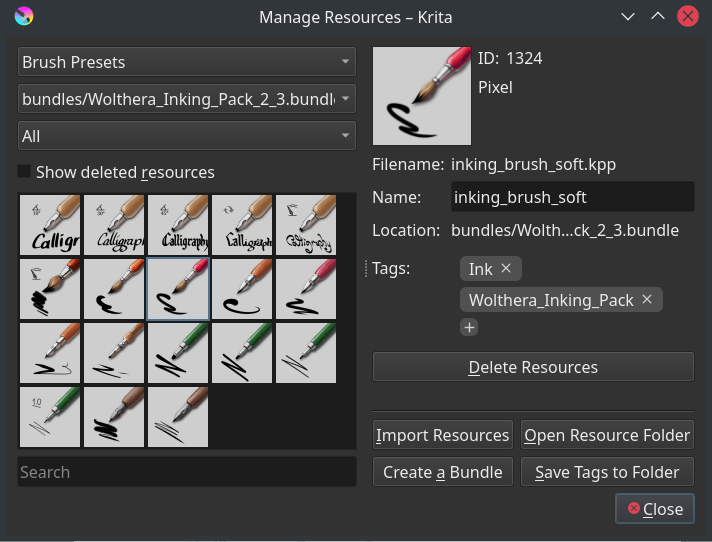

資源管理¶
Resources are pluggable bits of data, like brush presets or patterns. Krita has a sophisticated resource management system, which allows tagging, disabling, sharing and more.
5.0 版更變.
All resources are stored in the resource folder. This folder can be configured in the general preferences. As keeping track of all those resources can be a handful, Krita creates a SQLite cache in which it keeps the tags, names, version and other data about the resource.
Thanks to this cache, Krita can avoid loading a resource until necessary. This makes Krita a lot lighter than when it did not have this cache. Deleting the cache will delete the tags and relationships it keeps track of, so be careful.
If you have not changed your resource folder location, the resources can be found at...
- Linux
$HOME/.local/share/krita/- Windows
%APPDATA%\krita\- macOS
~/Library/Application Support/Krita/- If you installed Krita in the Windows Store, your custom resources will be in a location like:
%LOCALAPPDATA%\Packages\49800Krita_RANDOM STRING\LocalCacheRoamingkrita
Resource Libraries¶
Krita can load a variety of resource libraries.
- Resource Folder¶
The resource folder is considered the primary library. When creating new resources, they will all end up here. You can configure its location in the general preferences.
- Resource Bundle¶
The primary format to share resources is Resource Bundles, which is a compressed file containing all the resources together. It also contains some other information like metadata and a manifest so Krita can check there's no errors in the file.
- Adobe Brush Library¶
An
ABRwith multiple images inside. Previous versions of Krita could not load this, but now Krita will load them as a library of brushes.- Adobe Style Library¶
This is the Photoshop
ASLformat, which stores Layer Styles.- Document Storage¶
Every Krita document can store resources and act as a resource library. This is currently only used for palettes.
- Memory Storage¶
Finally, the memory library is where temporary resources are kept, which are generated by Krita and have no physical version on disk. This is currently used for the fore-to-background gradient.
You can manage resource libraries by going to . In this dialog, you can import resource libraries, deactivate them, and also Creating your own Bundle.
Importing Bundles¶
To import a bundle click on Import button on the top right side of the dialog.
Select .bundle file format from the file type if it is not already selected, browse to the folder where you have downloaded the bundle, select it and click Open. Once the bundle is imported it will be listed in the bundle view. To enable or disable a bundle, select the entry in the view, and then select Deactivate.
Creating your own Bundle¶
You can create your own bundle from the resources of your choice. Click on the Create bundle button. This will open a dialog box as shown below.

The left hand section is for filling up information about the bundle like author name, website, email, bundle icon, etc. The right hand side provides a list of available resources. Choose the type of resource you wish to add in to the bundle from the drop-down above and add it to the bundle by selecting a resource and clicking on the arrow button.
警告
Make sure you add brush tips for used in the respective paintop presets you are adding to the bundle. If you don't provide the brush tips then the brush presets loaded from this bundle will have a 'X' mark on the thumbnail denoting that the texture is missing. And the brush preset won't be the same.
Once you have added all the resources you can create bundle by clicking on the Save button, the bundle will be saved in the location you have specified. You can then share this bundle with other artists or load it on other workstations.
Deleting Imported Bundles¶
In case you wish to delete the bundles you have imported permanently click on the Open Resource Folder button in the Manage Resources dialog. This will open the resource folder in your file browser. Go inside the bundles folder and delete the bundle file which you don't need any more. The next time you start Krita the bundle and its associated resources will not be loaded.
Managing Resources¶
As mentioned earlier Krita has a flexible resource management system. Starting from version 2.9 you can share various resources mentioned above by sharing a single compressed ZIP file created within Krita.
The manage resources section in the settings was also revamped for making it easy for the artists to prepare these bundle files. You can open manage resource section by going to menu item.
You can do a variety of things here, like deleting backup files, mass-tagging, deleting/deactivating the resource itself, importing resources and open the create bundle dialog.
Importing resources¶
To import resources, select the import in the resource choosers or the resource manager.
The resource chooser import is fairly straight forward. You can only select certain kinds of files, and all the files you can select are possible to import for that resource.
The import button in the resource manager however sometimes needs to make a choice on whether an imported *.png file is a brush tip or a texture. When importing a format that can be used for multiple types of resources, a window will pop up asking which resource type you intended to import the file for.
Activating and Deactivating¶
Deactivating resources is done by selecting them in their respective resource chooser, and pressing the trashcan icon.
For activating a resource, go to , then turn on Show Deleted Resources. The deactivated resources should now be visible, select them, and then press Undelete Resource.
Returning a resource to the previous version¶
First go to the resource folder, .
Then go into the
paintoppresetsfolder.Backup (select and cut) all versions of the related resource into a place you can find them. Delete all these files from the
paintoppresetsfolder.restart Krita.
add only the desired version of the resource.
Deleting Backup files¶
When you delete a preset from Krita, Krita doesn't actually delete the physical copy of the preset. It just adds it to a black list so that the next time when you start Krita the presets from this list are not loaded. To delete the brushes from this list click on Delete Backup Files.
Tags¶
Tagging allows you to manage the resources on the fly while painting. All Krita resources can be tagged. These tags can be added via the resource manager, but also via the respective dockers such as brush preset docker, pattern docker etc. You can  the + icon in the docker and add a tag name. In addition to adding you can rename and delete a tag as well.
the + icon in the docker and add a tag name. In addition to adding you can rename and delete a tag as well.

Resources can belong to one or more tags. For example, you may have a Brush Preset of a favorite Ink Pen variant and have it tagged so it shows in up in your Inking, Painting, Comics and Favorites groups of brushes.
Every resource can be tagged, so brushes in the Predefined tab of the Brush Settings Editor can be also tagged and grouped for convenience.
In the resource manager, you can tag multiple resources at once. To select multiple resources, use Ctrl for adding individual resources to the selection or Shift for adding every resource at once. Then press the plus icon next to the tags section to add a tag to every selected resource.
Some tags are translated. If you make bundles for others, using such tags can be useful to ensure cross-language compatibility. The tags that get localized are...
Digital
Erasers
FX
Favorites
Ink
Paint
Pixel_Art
Sketch
Textures
Filtering¶
Some dockers, for example the brush preset docker as shown below, have a resource filter, which functions like a search bar for the resource in question.

You can enter brush name, tag name to quickly pull up a list of brush presets you want. When you select any tag from the tag drop-down and want to include brush presets from other tags as well then you can add filters the following way:
To filter based on the partial, case insensitive name of the resources you can add
partialnameor!partialname.To include other Tags type the respective name of the tag in square brackets like this
[Tagname]or to exclude a tag type![Tagname].For case sensitive matching of preset name type
"Preset name"or! "Preset name"to exclude.
An incredibly quick way to save a group or brushes into a tag is to:
Create a new tag by
on the +. This will empty out the contents of the Brush Preset docker.Use the Resource Filter at the bottom of the Brush Presets dock or Brush Settings Editor to type in what you want to group. For instance: if you type
Pencilin the filter box you will get all Brush Presets withPencilsomewhere in their name. Now you have all the Pencil-related Brush Presets together in one place.To finish, click the Save button (small disk icon to the right of the Resource Filter box) or press the Enter key and all the items will be saved with the new tag you created.
Now, anytime you want to open up your "digital pencil box" and see what you have to work with all you have to do is use the pull-down and select Pencils. The Resource Filter works the same way in other parts of Krita so be on the lookout for it!
- Resource Zooming
If you find the thumbnails of the resources such as color swatches brushes and pattern to be small you can make them bigger or Zoom in. All resource selectors can be zoomed in and out of, by hovering over the selector and using the Ctrl +
 shortcut.
shortcut.